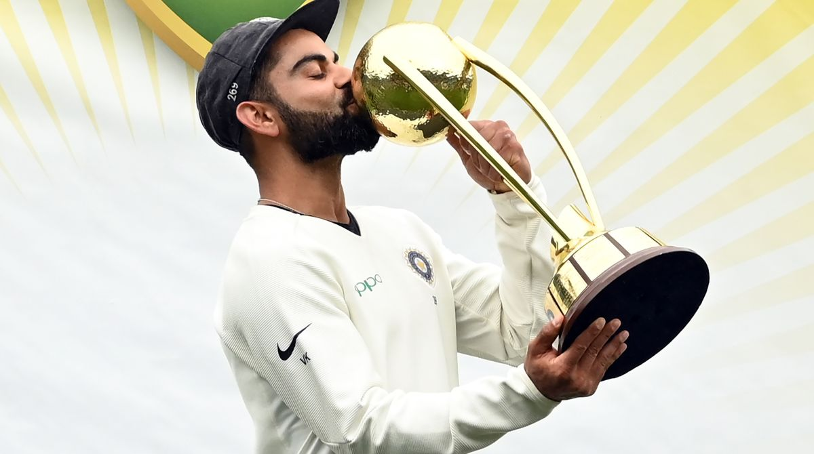

A Legendary Cricketer, Leader, and Inspiration.
Virat Kohli, born on November 5, 1988, is one of the most talented and admired cricketers of all time. He is known for his aggressive yet controlled style of play and his incredible consistency across all formats of the game. A former captain of the Indian national cricket team, Kohli has inspired millions with his leadership, discipline, and unmatched batting prowess.
His journey from a young aspiring cricketer to becoming one of the greatest players in the history of cricket is a testament to his hard work, determination, and passion for the game. Kohli has consistently been ranked as one of the top batsmen globally, and his fitness regime has set new standards in sports.
Virat Kohli has accomplished many incredible feats throughout his cricketing career, including:
"Self-belief and hard work will always earn you success." - Virat Kohli
"I should play and enjoy the game and inspire the next generation." - Virat Kohli